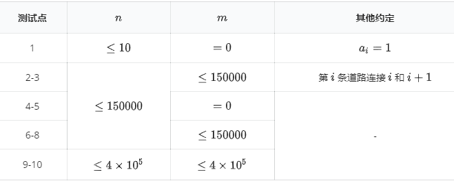

九条可怜是一个热爱阅读的女孩子。
这段时间，她看了一本非常有趣的小说，这本小说的架空世界引起了她的兴趣。
这个世界有 $n$ 个城市，这 $n$ 个城市被恰好 $n − 1$ 条双向道路联通，即任意两个城市都可以互相到达。同时城市 $1$ 坐落在世界的中心，占领了这个城市就称霸了这个世界。
在最开始，这 $n$ 个城市都不在任何国家的控制之下，但是随着社会的发展，一些城市会崛起形成国家并夺取世界的霸权。为了方便，我们标记第 $i$ 个城市崛起产生的国家为第 $i$ 个国家。
在第 $i$ 个城市崛起的过程中，第 $i$ 个国家会取得城市 $i$ 到城市 $1$ 路径上所有城市的控制权。新的城市的崛起往往意味着战争与死亡，若第 $i$ 个国家在崛起中，需要取得一个原本被国家 $j(j \ne i)$ 控制的城市的控制权，那么国家 $i$ 就必须向国家 $j$ 宣战并进行战争。
现在，可怜知道了，在历史上，第 $i$ 个城市一共崛起了 $a_i$ 次。但是这些事件发生的相对顺序已经无从考究了，唯一的信息是，在一个城市崛起称霸世界之前，新的城市是不会崛起的。
战争对人民来说是灾难性的。可怜定义一次崛起的灾难度为崛起的过程中会和多少不同的国家进行战争（和同一个国家进行多次战争只会被计入一次）。可怜想要知道，在所有可能的崛起顺序中，灾难度之和最大是多少。
同时，在考古学家的努力下，越来越多的历史资料被发掘了出来，根据这些新的资料，可怜会对 $a_i$ 进行一些修正。具体来说，可怜会对 $a_i$ 进行一些操作，每次会将 $a_x$ 加上 $w$。她希望在每次修改之后，都能计算得到最大的灾难度。
然而可怜对复杂的计算并不感兴趣，因此她想让你来帮她计算一下这些数值。
对题面的一些补充：
第一行输入两个整数 $n, m$ 表示城市个数和操作个数。
第二行输入 $n$ 个整数表示 $a_i$ 的初始值。
接下来 $n − 1$ 行，每行输入两个整数 $u_i, v_i (1 \le u_i, v_i \le n)$ 描述了一条道路。
接下来 $m$ 行每行输入两个整数 $x_i, w_i$ 表示将 $a_{xi}$ 加上 $w_i$。
输出共 $m + 1$ 行，第一行表示初始的 $a_i$ 的答案，接下来 $m$ 行每行表示这次修正后的答案。
5 3 1 1 1 1 1 1 2 1 3 2 4 2 5 2 1 3 1 4 1
6 7 9 10
【样例解释】
在修正开始之前，如果按照所在城市 $4, 1, 5, 3, 2$ 的顺序崛起，那么依次会和 $0, 1, 2, 1, 2$ 个国家进行战争。这时一共会产生 $6$ 对敌对关系。可以证明这是所有崛起顺序中的最大值。
【数据范围与提示】

 Comet OJ
Comet OJ